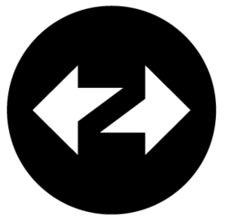
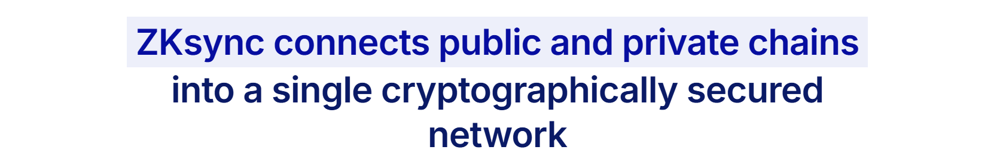

①
Choose a cross-chain route (origin chain → zkSync Era)
Select the correct origin chain and ensure the destination is zkSync Era. Avoid lookalike networks and unofficial UIs.

This is a practical, security-first guide to the zkSync Cross-Chain Bridge: how to bridge assets across chains into zkSync Era, what you pay (fees + gas), how to set up your wallet (RPC / Chain ID), what to expect for withdrawals (finality / exit timing), and how to troubleshoot “missing funds / stuck bridge” cases using explorers as the source of truth.
Select the correct origin chain and ensure the destination is zkSync Era. Avoid lookalike networks and unofficial UIs.
If approvals are required, keep them limited. Unlimited approvals are a common failure mode and a common exploit path.
Cross-chain UIs can lag. Verify the origin tx and the destination balance on explorers before bridging the full amount.
Exiting zkSync Era back to Ethereum can involve finality delays and L1 gas. Keep ETH buffers and expect time variance.
A zkSync Cross-Chain Bridge typically means a bridging flow that moves assets from an origin chain into zkSync Era through a supported route (official portal or reputable bridge providers). Operationally, success depends on correct chain selection, gas planning on the origin chain, and strict verification (origin tx hash → route status → destination balance).
You want liquidity on zkSync Era from a non-Ethereum chain and need a structured, verifiable process.
Wrong origin chain, token/address mismatches, approval risk, and delayed bridging due to route batching.

Bridging into zkSync Era from another chain (“inbound”) is a route process: origin-chain transaction + bridge/relayer processing + destination delivery. Exiting zkSync Era to Ethereum (“exit”) can involve batching/finality and L1 execution steps—so timing and gas requirements differ.
| Flow | What happens | Common mistake |
|---|---|---|
| Inbound (Origin chain → zkSync Era) | Origin tx + bridge route processing + destination delivery | Wrong origin chain / wrong token / not verifying destination balance |
| Exit (zkSync Era → Ethereum) | Finality/batching + Ethereum-side steps for completion | Assuming instant delivery + not keeping ETH for L1 gas |
Cross-chain bridging costs are multi-part. Your total spend is the combination of origin-chain gas, any route/provider fees, and destination-chain gas for follow-up actions on zkSync Era.
For zkSync Era, ensure your wallet is configured correctly and you can verify balances on the official explorer. Cross-chain routes fail most often due to incorrect chain selection or address mismatch.
| Parameter | Value | Why it matters |
|---|---|---|
| Network name | zkSync Era Mainnet | Prevents confusion with other networks |
| RPC URL | https://mainnet.era.zksync.io | Baseline endpoint for correct routing |
| Chain ID | 324 | Critical for wallet-chain alignment |
| Currency symbol | ETH | Gas token on zkSync Era |
| Explorer | https://explorer.zksync.io | Source of truth for balances/tx |
Exiting to Ethereum is not the same as inbound cross-chain bridging. L2 → L1 exits depend on batching/finality and Ethereum-side execution. Timing varies with network conditions, and some flows require ETH on Ethereum for the final step.
zkSync batches must be verified/finalized before Ethereum recognizes the L2 state for withdrawal completion.
If you need to exit quickly, plan before bridging in. Keep ETH on Ethereum for potential L1 gas and recovery steps.
Debugging cross-chain moves requires checking both sides: origin chain + destination chain (and sometimes a route/relayer status page). Explorers are your ground truth.
Confirm delivery, token contract, transfers, and final balance.
Open zkSync Explorer
Confirm the send tx, approvals, and event logs for bridge initiation.
Blockscan — explorer directory
Unique, reputable references for zkSync cross-chain bridging, verification, and safety:
A zkSync cross-chain bridge is a route that moves assets from an origin chain into zkSync Era using a bridge/relayer flow. Verify on explorers on both sides.
The commonly used chain ID for zkSync Era Mainnet is 324. Cross-check with official zkSync docs and reputable network lists.
Because you add an origin chain and a route/relayer layer. More variables (chain selection, token formats, route processing) means more failure points and more verification steps.
ETH is used for gas on zkSync Era. Keep a buffer after bridging for approvals and swaps.
Start with the origin tx hash, then check any route tracking page (if provided), and finally confirm your destination address balance on the zkSync Era explorer.
Use bookmarks, verify domains, keep approvals limited, and confirm token contracts on explorer. Don’t trust UI statuses without explorer proof.
Wallet UI caching or missing token display. Switch to zkSync Era, refresh, and add the token using the verified contract address from the explorer.